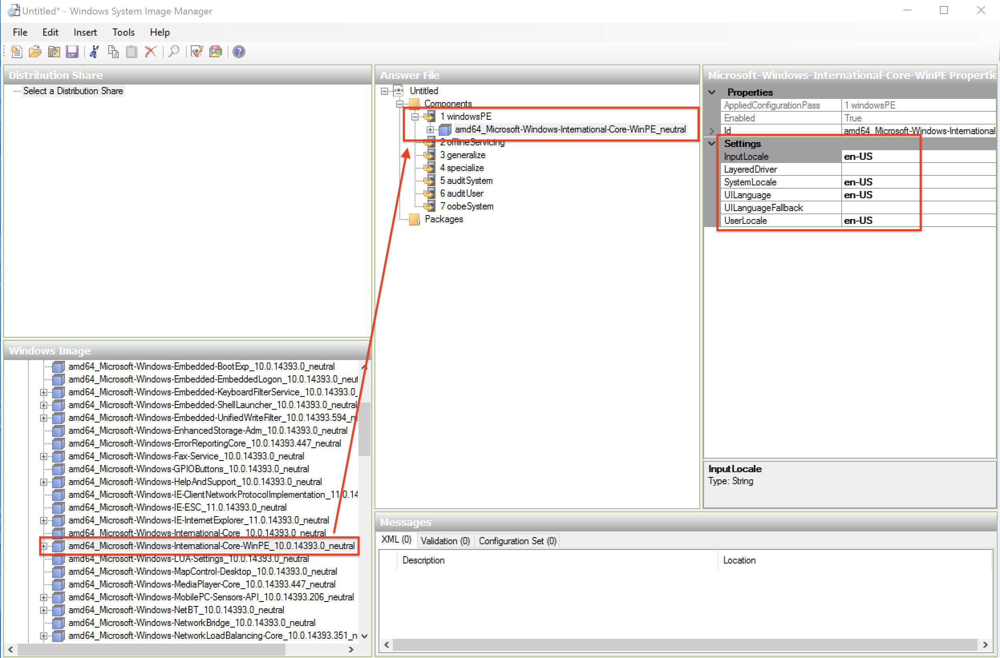
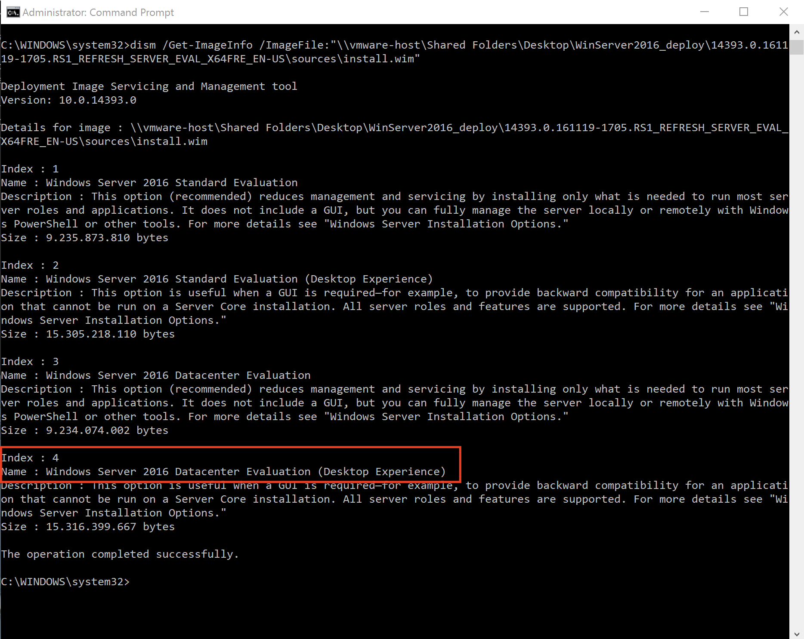
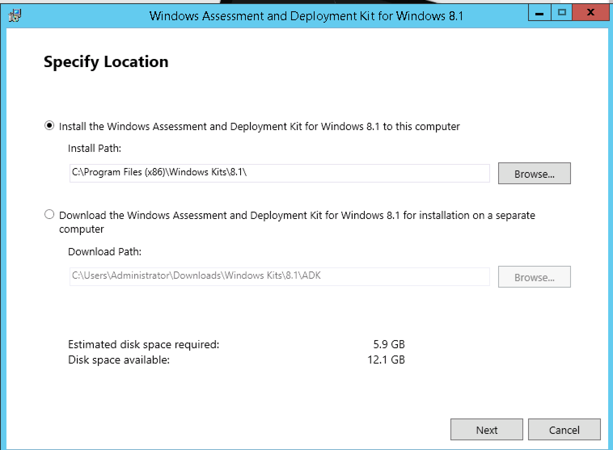
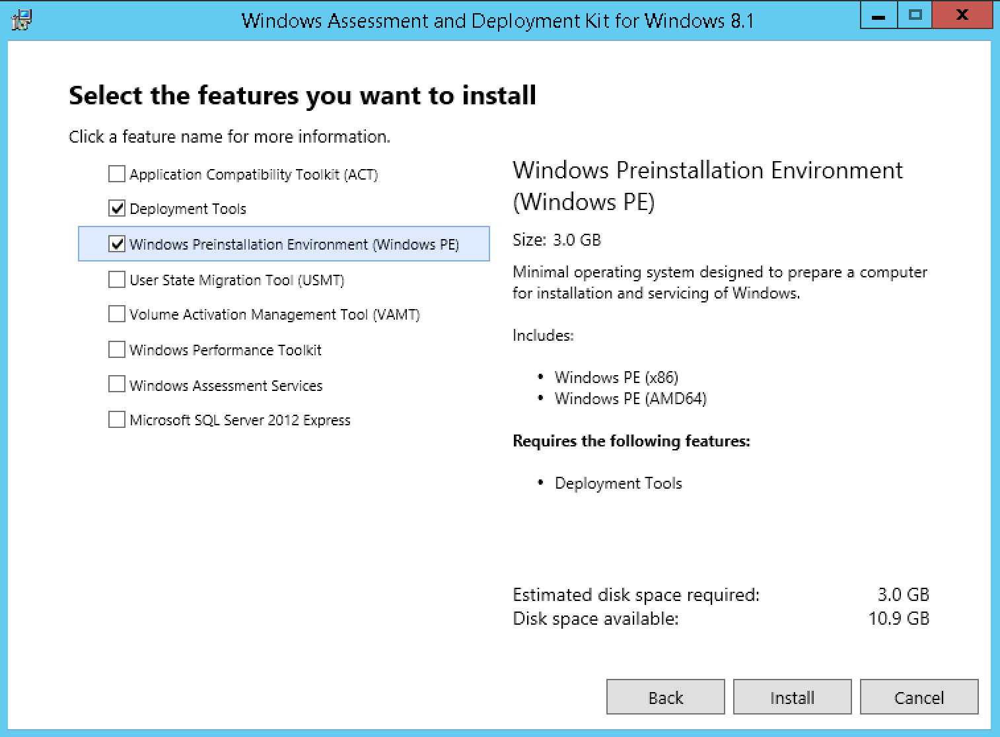

Windows Installation
KUBAM can be used to deploy Windows. We support
- Windows 2012 R2
- Windows 2016
At this time KUBAM requires a decent amount of manual steps to install Windows. We are working to make this easier but we still hope this method sucks less than other installers that you are using.
Windows Server 2016
To install Windows Server 2016, we will use unattended instalation feature. That will give us zero-touch deployment. We will use original Windows Server 2016 instalation iso in combination with "answer file". To prepare and create answer file (autounattend.xml) we are using Windows System Image Manager (SIM) tool from Windows Assessment and Deployment Kit (ADK). Preparation of the answer file should be done on Windows workstation or server. Answer file will be packed into .img file and mounted as additional drive in UCS vMedia Policy.
Download and install latest Windows ADK
Windows ADK can be downloaded from Microsoft website.

After ADK is downloaded we will start installation on the local machine. We just need to install Deployment Tools feature which consist Windows System Image Manager.

Creating "answer file" (autounattend.xml)
To be able to generate answer file, we need to copy content of Windows Server 2016 instalation image (.iso) to some folder on our workstation (or server). We can mount it to virtual optical drive, or extract it using archiver. In this example we are using Windows Server 2016 Evaluation (14393.0.161119-1705.RS1_REFRESH_SERVER_EVAL_X64FRE_EN-US.ISO).

After we have instalation files on our workstation, we will run Windows System Image Manager that we installed in previous step.

In System Image Manager we have to import instalation image for creation of the answer file.

We are selecting install.wim from the /sources folder in extracted .iso image.

We have option to choose which version of operative system we want to prepare answer file for. We are selecting Windows Server 2016 SERVERDATACENTER

We have to wait for few minutes while SIM is generating catalog file. After catalog file is created we will create new answer file (File > New Answer File). Now we can start adding components for our answer file.
First we are selecting amd64_Microsoft-Windows-International-Core-WinPE_neutral from lower left pane, and place it in answer file pane under 1. windowsPE.
Then we have to specify language settings, you will enter values for your language preferences, we are entering en-US:
- InputLocale: Keyboard layout (en-US)
- SystemLocale: system locale language (en-US)
- UILanguage: User Interface language (en-US)
- UserLocale: per-user settings for currency, time, numbers... (en-US)

Click + next to amd64_Microsoft-Windows-International-Core-WinPE_neutral in middle pane and navigate to SetupUILanguage to specify the language used during Windows Setup.

To get a list of included OS instalations, we are going to run dism tool (included in Windows OS) in command prompt and point to install.wim.
dism /Get-ImageInfo /ImageFile:<Path to file>\install.wim
We are getting following output from dism tool:

Windows Server 2012 R2
KUBAM requires that you stage an install image on an existing 'Stage' Server. The Stage server should be running the same version of Windows that you would like to install. These instructions are for Windows Server 2012 R2 Datacenter.
The stage server can be a virtual machine or physical machine. If it is a physical machine it does not need to be running on Cisco hardware.
The following should be performed on the Stage Server:
Download Windows ADK
The Windows Assessment and Deployment Kit (ADK) is required to build WinPE images that KUBAM can use. Download this from Microsoft.
Install using the default directory.

We only require the two services to be installed:
- Deployment Tools
- Windows PE

While this installs about 3 GB, have a look at one of our developers bee keeping websites. If you happen to be in Croatia you can order some honey.
Download Cisco Drivers
The latest Cisco device drivers can be downloaded from Cisco's Support site. URLs seem to change from time to time, but was last available here. If that link is dead, go to https://cisco.com/support and in the Downloads menu type UCS B-Series Blade Server Software the main Cisco Site, then download the drivers. It seems to be a 1GB file.
Copy the Windows VNIC drivers to the Windows server. Put it in the C:\Drivers directory:
mkdir c:\drivers
You should then have the VNIC drivers in this directory
enic6x64.cat
enic6x64.inf
enic6x64.sys
Run winkubam.bat
With the two prereqs in place you are ready to generate the WinPE image that will be used for the boot process.
Manually Creating Autoinstallation Files
UCS needs a hard drive image that includes the autounattend.xml file. This image can be created using:
dd if=/dev/zero of=kube0${i}.img bs=1M count=1
mkfs -t fat win.img
mkdir tmpmnt
mount -o loop win.img tmpmnt
## copy files in
umount tmpmnt
rmdir tmpmnt